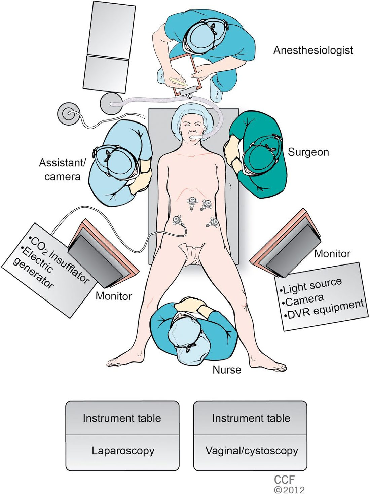
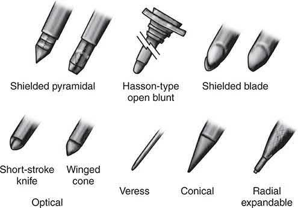
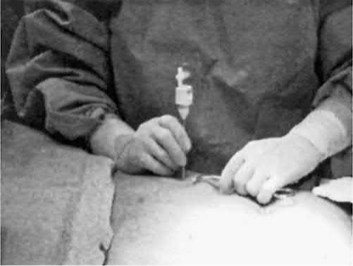
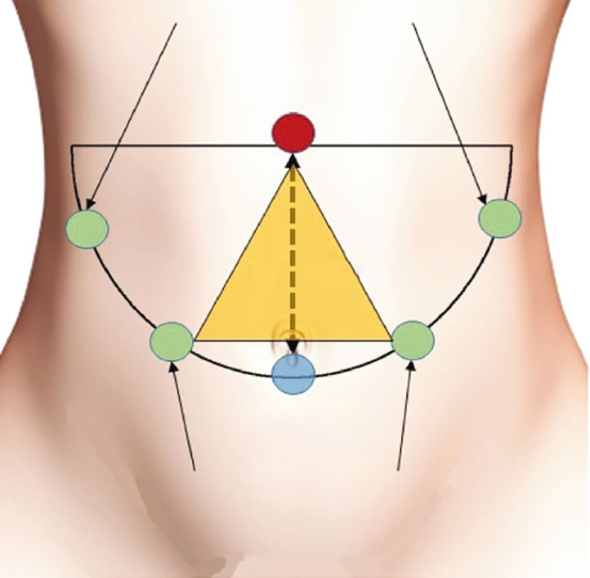

Laparoscopic Principles
Summary
- Laparoscopic (minimal access) surgery uses a rigid endoscope introduced through ports into a gas-distended peritoneal cavity to perform surgical therapeutic goals with minimal somatic and psychological trauma compared with open surgery [1].
- It relies on pneumoperitoneum, created most commonly with carbon dioxide, to provide working space and visualisation, and on either a closed (Veress needle) or open (Hasson) technique for safe abdominal access [2].
- Since the first video-laparoscopic cholecystectomy performed by Mühe in 1985 and popularised by Mouret in 1987, laparoscopy has spread to most general surgical procedures and is now a required competency in surgical residency training [2].
Definition
Minimal access surgery is "a product of modern technology and surgical innovation that aims to accomplish surgical therapeutic goals with minimal somatic and psychological trauma," offering reduced wound access trauma, shorter operating and hospital stays, and faster recuperation compared with conventional open techniques [1]. Laparoscopy specifically involves introducing a rigid endoscope through a port into the peritoneal cavity, distended by pneumoperitoneum, to visualise and manipulate intra-abdominal structures [1][2].
Pathophysiology
- Pneumoperitoneum is achieved by insufflating carbon dioxide into the peritoneal cavity; CO2 is preferred because it dissolves rapidly in blood, is nonflammable, and carries a low risk of gas embolism, with intra-abdominal pressure maintained at 10-15 mm Hg (normal range) via an insufflator [2][3].
- Cardiopulmonary dysfunction can occur once intra-abdominal pressure exceeds 20 mm Hg [3].
- Increased intra-abdominal pressure raises mean arterial pressure, pulmonary artery pressure, heart rate, systemic vascular resistance, central venous pressure, mean airway pressure, peak inspiratory pressure, and end-tidal CO2, while decreasing pH, venous return (from IVC compression), cardiac output, and renal blood flow secondary to decreased cardiac output; hypovolaemia lowers the pressure threshold at which compromise occurs, and PEEP worsens these effects [3].
- CO2 also causes some decrease in myocardial contractility [3].
- In the hypovolaemic patient, excessive IVC pressure combined with reverse Trendelenburg positioning and loss of lower-extremity muscle tone can decrease venous return and cardiac output, an effect not seen in the normovolaemic patient [4].
- The most common arrhythmia during laparoscopy is bradycardia, caused by a vagovagal response to rapid stretch of the peritoneal membrane, occasionally with hypotension [4].
- Increased intra-abdominal pressure decreases renal blood flow, glomerular filtration rate, and urine output via direct pressure on the kidney and renal vein, secondarily increasing plasma renin release and sodium retention; hormonally mediated changes (elevated ADH) can suppress urine output for up to an hour after the procedure ends, so intraoperative oliguria during an uncomplicated case should not by itself prompt extra fluid administration [4].
- Because insensible fluid losses through an open abdomen are eliminated with laparoscopy, intraoperative fluid needs are generally lower than for an equivalent open operation [4].
- Laparoscopy is associated with an increased risk of venous thromboembolism from pneumoperitoneum-induced IVC/iliac vein compression combined with prolonged operative time and reverse Trendelenburg positioning [2][5].
Clinical features
Not covered in source textbooks, this is a surgical technique/access method rather than a disease process, so it has no independent clinical presentation. Preoperative assessment instead focuses on patient factors that affect tolerance of pneumoperitoneum and positioning: cardiopulmonary reserve, history of venous thromboembolism, prior abdominal surgery (adhesions), umbilical abnormalities, ascites, and range of motion for positioning [2].
Etiology
Not covered in source textbooks, not applicable to a surgical technique.
Diagnosis
Not covered in source textbooks, not applicable; however, correct intraperitoneal placement of the Veress needle is confirmed intraoperatively by the hanging-drop method, free flow of saline with no aspirate of blood/bowel content, and an opening pressure below 10 mmHg (Bailey & Love) or below 5-6 mmHg (Maingot's) [5][6].
Scoring and Severity
Not covered in source textbooks.
Treatment and Management
Patient selection and contraindications: Patients with massive abdominal distension precluding safe insufflation, or unstable haemodynamics unable to tolerate pneumoperitoneum, should not undergo laparoscopy; patients for whom a possible laparotomy would pose prohibitive risk should not be offered any surgical approach, including laparoscopy, given the possibility of conversion [2].
Equipment: A functioning laparoscopic "stack" is required, comprising monitor, light source, insufflator, camera, diathermy, and irrigation/aspiration system [2][7]. Laparoscopes are available in 5 and 10 mm diameters with 0°, 30°, 45°, and 50° viewing angles [2].

- Access techniques: There are two fundamental ways to access the abdomen laparoscopically: the open (Hasson's or modified Hasson's) technique and the closed technique (Veress needle and/or visual entry trocar); complication rates do not differ significantly between them, so the surgeon's preferred technique should be used, though blind trocar insertion without a Veress needle or visual control is avoided [6].
- In the Hasson (open) technique, a 1-2 cm skin incision is made at the umbilicus, subcutaneous tissue and fascia are divided under direct vision, the peritoneum is grasped and opened, and a blunt trocar is secured with fascial stay sutures before insufflation to 15 mmHg [2][5].
- In the Veress needle (closed) technique, a spring-loaded needle is inserted (commonly at the umbilicus or Palmer's point, 3 cm below the left costal margin in the mid-clavicular line); correct placement is confirmed by the hanging-drop test, free saline flow without aspirate, and an opening pressure <10 mmHg, after which CO2 insufflation proceeds at low flow (1-4 L/min) to a maximum pressure of 15 mmHg [6].
- The Veress needle's most catastrophic complication is major vessel injury, so its trajectory must avoid the aorta and iliac vessels [5].
- Direct trocar insertion without prior pneumoperitoneum and optical trocar entry (a 0° scope inside a clear trocar visualising each abdominal wall layer during insertion) are alternative techniques used by some surgeons [5].


- Port placement: Secondary trocars should always be inserted under direct vision, perpendicular to the abdominal wall, using a two-handed or controlled technique to avoid sudden "plunging" [6].
- Ports should be spaced to avoid the "crossing/sword-fighting" effect, ideally forming an equilateral triangle or "diamond of success" around the target, with an angle of 60-90 degrees between working instruments and the fulcrum roughly 15 cm from the target for standard 30 cm instruments [2][5].
- Smaller-diameter trocars reduce postoperative pain, port-site hernia, and improve cosmesis; all fascial defects from 10 mm or larger bladed trocars should be closed [5][6].

Positioning: Trendelenburg position (head down) improves access to lower abdominal/pelvic organs; reverse Trendelenburg improves access to the upper GI tract and biliary tree [2]. Sequential compression devices are used given the VTE risk from pneumoperitoneum and positioning [2].
- Dissection and tissue handling: Laparoscopic dissection is typically two-handed (an assisting grasper providing countertraction, an active dissecting tool that may be nonenergised or energised) and falls into blunt, sharp, or electrosurgical categories, the last carrying the highest injury risk if the electrode tip is not kept visible [2].
- A short-duration, high-voltage coagulation current causes rapid tissue heating and carries the highest thermal injury risk, whereas lower-voltage, higher-wattage cutting current causes less thermal injury; bipolar electrosurgery confines current between two adjacent electrodes and provides the safest small-vessel coagulation [4].
- Additional energy devices include the harmonic scalpel (ultrasonic, disrupts protein hydrogen bonds to coagulate, cost-effective for medium vessels) and the argon beam coagulator (non-contact, smokeless, good for hepatic/splenic haemostasis) [3].
Laparoscopy in pregnancy: Laparoscopic surgery is considered safe at any stage of pregnancy; recommended precautions include obstetric involvement, left lateral decubitus positioning to avoid caval compression, sequential compression devices, entry remote from the gravid uterus (open Hasson technique preferred by many organisations), and maintaining CO2 pressures up to 15 mmHg [2][4].
Surgeries
- Laparoscopic cholecystectomy was the index procedure that launched the laparoscopic revolution, first performed by Erich Mühe in 1985 and popularised globally after Philippe Mouret's 1987 operation, after which open cholecystectomy rates fell steeply within a decade [2].
- Other procedures rapidly converted to a laparoscopic approach, including inguinal hernia repair, gastrectomy, appendectomy, and colectomy [2].
- Related access variants include single-incision laparoscopic surgery (SILS), performed through one umbilical port with a multichannel device, and hand-assisted laparoscopic surgery (HALS), in which the surgeon's hand is introduced through a mini-laparotomy while pneumoperitoneum is maintained, allowing palpation, blunt dissection, and manual haemorrhage control [1].
- Specimen extraction after laparoscopic resection may use retrieval bags (protecting the wound and, for benign disease, permitting morcellation) or an enlarged extraction incision; morcellation is avoided in oncologic surgery because it disrupts margins and risks tumour cell spillage [1][2].
Complications
- Complications specific to establishing pneumoperitoneum include injury to intra-abdominal structures, port-site hernia, wound infection, haemorrhage, and rarely CO2 embolism; shoulder-tip pain is a common minor postoperative effect from residual subdiaphragmatic gas [7].
- Reported rates: port-site infection <5%, port-site hernia <2%, visceral injury <1% [7]; a separate source cites port-site hernia rates of 0.65-2.80% of laparoscopic GI operations [5] and vascular or bowel injury with Veress needle or trocar insertion at approximately 0.1% [3].
- CO2 embolism presents as a sudden transient rise in end-tidal CO2 followed by a drop and hypotension; treatment is placing the patient head-down and turned to the left, attempting to aspirate CO2 through a central line, and prolonged CPR if needed [3].
- Bradycardia/hypotension from peritoneal stretch (vagovagal response) is managed by desufflation, vagolytic agents (e.g., atropine), and volume replacement [4].
- CO2 pneumothorax can occur during transhiatal dissection (e.g., laparoscopic Nissen fundoplication or Heller myotomy) from mediastinal pleural injury; initial management is placement of a red rubber catheter across the defect rather than aborting the case, with evacuation via water seal at the end of the procedure [4].
- General limitations of minimal access surgery that predispose to complications include lack of 3D vision and loss of tactile feedback, increased operative time, difficulty achieving haemostasis, difficulty with large specimen extraction, a steep learning curve, and cost [1].
Prognosis
- Laparoscopic (versus open) surgery is associated with reduced postoperative pain, quicker recovery, improved cosmesis, and shorter hospital stay, contributing to reduced wound infection, dehiscence, bleeding, herniation, and nerve entrapment, decreased wound trauma and heat loss, and improved visualisation (magnification) of anatomy [1][6].
- Reduced serosal handling with minimally invasive approaches decreases postsurgical adhesion formation [1].
- Quality of life appears improved by a laparoscopic approach compared with open surgery for equivalent procedures [2].
- Conversion to an open operation, when required, does not represent a complication but rather sound surgical judgement in favour of patient safety [1].
References
- Bailey & Love's Short Practice of Surgery, 28th ed., Ch. 10
- Sabiston Textbook of Surgery, 22nd ed., Ch. 11
- The ABSITE Review, 2022, Ch. 38
- Schwartz's Principles of Surgery: ABSITE and Board Review, Ch. 14
- Maingot's Abdominal Operations, 13th ed., Ch. 6
- Bailey & Love's Short Practice of Surgery, 28th ed., Ch. 7
- Oxford Handbook of Clinical Surgery, 5th ed., Ch. 21